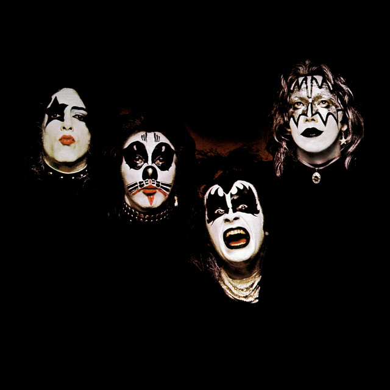
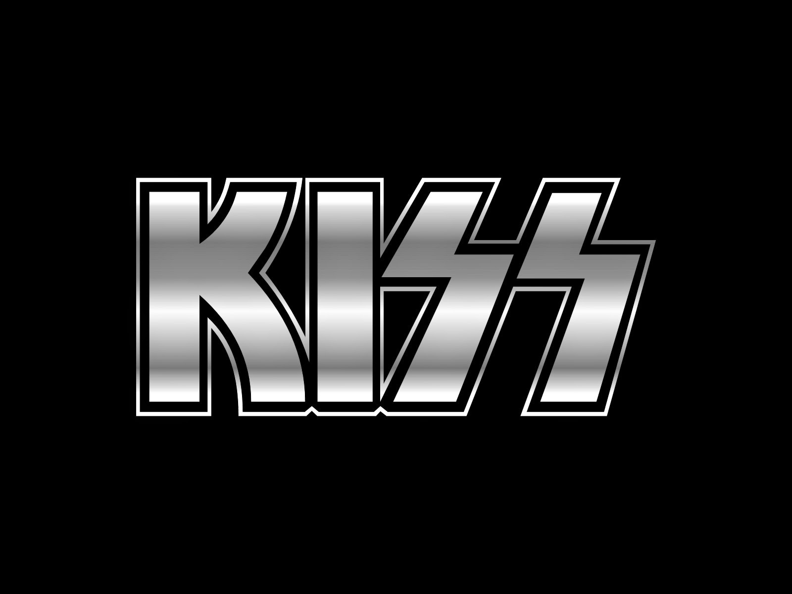
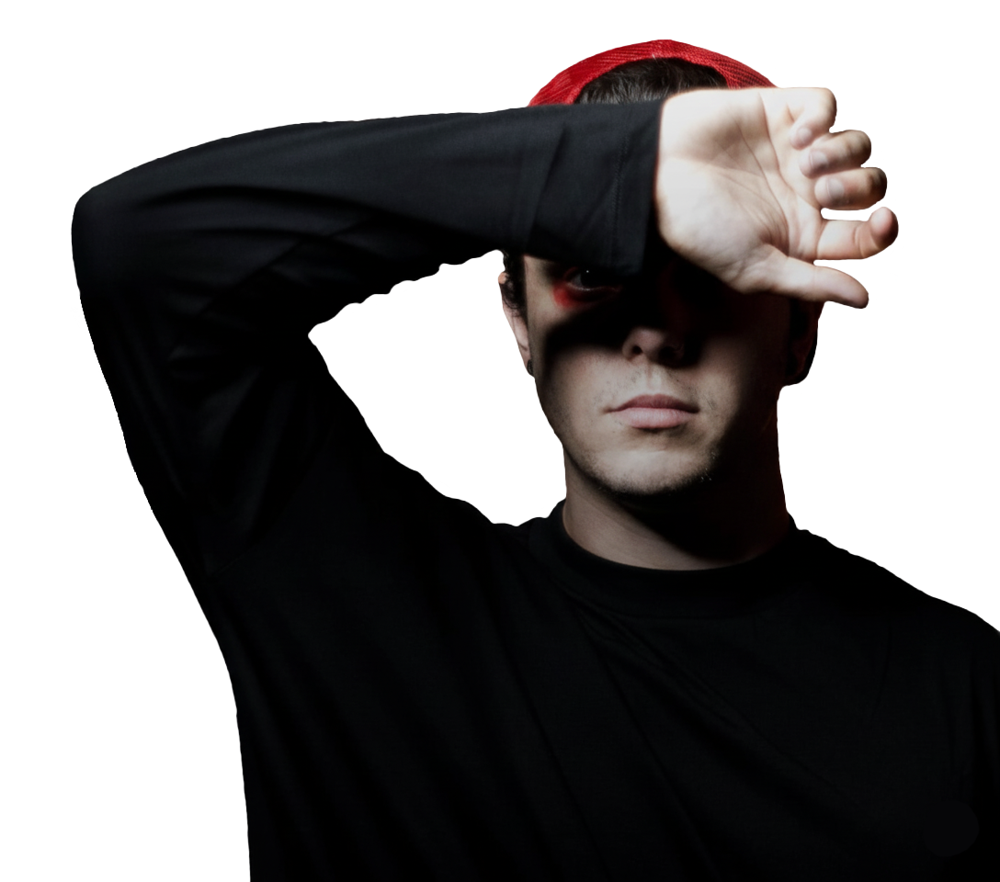
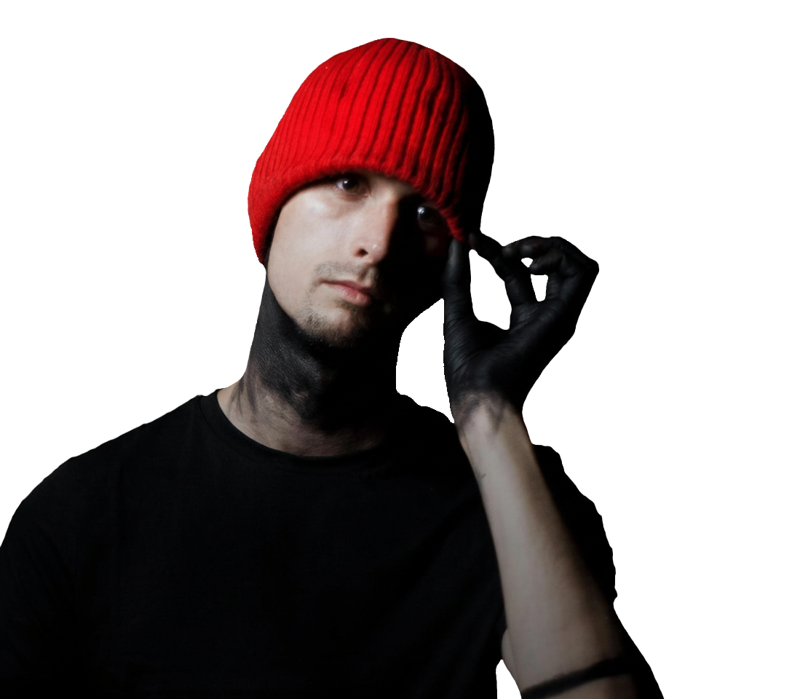

Uma das bandas de rock mais icônicas e influentes do mundo conhecida por suas performances e maquiagem distinta.

Twenty One Pilots é um duo americano originário de Columbus. O duo alcançou um grande sucesso com seu quarto álbum de estúdio, Blurryface, que produziu os singles de sucesso "Stressed Out" e "Ride"

Uma das bandas de rock mais icônicas e influentes do mundo, conhecida por suas performances teatrais e maquiagem distinta.